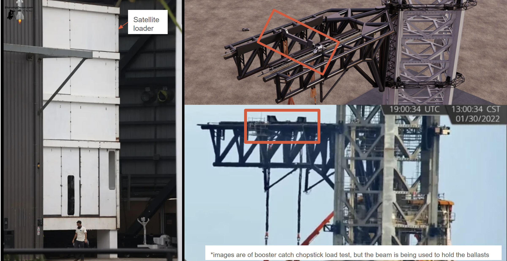

SpaceX - Starship Mechanisms Intern
Dates: January 2024 – May 2024
Team: Starship Mechanisms (temporarily also in Starship Launch Tower Design team)
Focus: Starship Build (Tooling, fixturing, and process development for Starship vehicle)
Note: this work is covered by a SpaceX NDA. Specific dimensions, load values, proprietary design details, and internal system names have been omitted or generalized where necessary. Descriptions reflect general methodology and engineering contributions only.
Role Summary
I worked on the Starship Mechanisms team, contributing to tooling, fixturing, process development, and build infrastructure across multiple Starship vehicle and launch tower systems. Projects spanned propellant transfer tube alignment, flap production tooling, QD retrofit, robotic welding automation, and satellite loader infrastructure. Many projects required travel to Starbase in Texas to work directly with the teams building and integrating hardware in the field.
Midway through the internship, I also temporarily was an intern for the launch tower team to support the vehicle simulator beam and plume box projects. The move came from a combination of my wanting larger projects and the tower team needing extra hands.
- Designed and built tooling for propellant transfer tube alignment to within ±0.01" concentricity
- Developed tooling, work orders, and processes for flap production: radius gauges, Instron fixtures, weld and rivet coupons, stud welding tools, and a multi-purpose transport/build cart
- Designed and built plume pressure measurement device, informed by flight footage and historical data review
- Designed vehicle simulator beam for satellite loader integration on launch tower chopsticks
- Programmed and built a fully automated robotic flap corrugation cell including PLC wiring and robot code
- Led QD retrofit process development: build flow, work orders, root cause analysis, and issue resolution
- Created drawings, SOPs, work orders, and change orders with revision tracking across all projects
Sump & Transfer Tube Alignment Tooling
Background
The propellant transfer tubes feed into a distribution system that routes propellant to the engines, and attach to the inner and outer sump. The entire system is double wall vacuum jacketed, which is why there are inner and outer walls for all features that must be concentric. Inner and outer feed tubes are welded onto the transfer tubes. The challenge was locating and constraining the outer transfer tube to ensure concentricity of the feed holes during welding at a geometrically complex angle. The hole geometry was also not a standard ellipse, circle, or oblong shape; it is somewhat like an egg-shaped profile, a result of the propellant distribution system design.
Problem: needed a way to locate and constrain the outer transfer tube at the precise angle with close-to-perfect concentricity of feed holes for welding.
Centering Tool V1
I focused on tool effectiveness, ease of manufacturing, and ease of use. Key considerations throughout:
- Tool effectiveness: designed for high torsional stiffness; properly constrains the transfer tubes so both the tubes and feed tube holes are concentric at the required angle
- Ease of manufacturing: maximized symmetric components, used tabs and etchings to reduce assembly confusion, and wrote detailed SOP build instructions
- Ease of use: kept the tool lightweight; etchings align with marks on the outer transfer tube for clocking
After production feedback, several issues emerged with V1:
- Tool did not fit as designed as the physical transfer tube hole geometry did not match the CAD: roll-formed edges were angled, hole curves were imperfect, and the manufacturing state in CAD didn't match either the part CAD or the physical part (a NX artifact)
- Clearance needed to be increased while still maintaining the tight concentricity requirement
- The tool was difficult to position at the required angle: welders were to locate using the angled feed tube holes and etch markings, which proved difficult to do in practice
The resolution involved taking physical measurements across the line of symmetry and reconciling with the closest matching points across both the part and manufacturing state CAD.
Centering Tool V2
V2 addressed the issues surfaced from production use. Key changes:
- Updated hole geometries to match physical parts rather than nominal CAD
- Redesigned for parallel-to-ground use to make positioning easier for welders (this required sacrificing manufacturing simplicity)
- Added more structural cross sections that align precisely with transfer tube etchings, providing a reliable clocking reference without requiring weld interpretation (sacrificed manufacturing simplicity)
Additional Tooling for This System
- Concentricity clips: flat laser-cut sheet metal clips tacked onto the transfer tubes during welding to maintain concentricity throughout the weld process. Two-point contact on all edges ensures correct positioning
- Rounding rings: tooling and use instructions for holding transfer tubes in place and concentric during welding
- Sump flange placement tool: designed and produced to locate the sump flange during assembly
- Build work orders: clear and detailed build instructions covering the full process for this system

Flap Production Tooling & Processes
I contributed tooling, test fixtures, coupons, and process documentation across several aspects of flap production:
Tooling & Fixtures
- Radius gauges: created radius gauges and associated work orders for bump-formed root box skins
- Instron test fixtures: designed testing tooling for Instron mechanical testing of various flap components
- Leading edge stud welding tool: designed the tool and created the associated work order
- FWD flap HHLW cell: created work instructions for cell build
Coupons & Process Qualification
- Resistance Spot Welding (RSW) coupons: created and tested coupons for a new RSW schedule to qualify the welding parameters
- Rivet hole tolerancing coupons: created coupons that helped designers select the correct hole size for their target rivet
Work Order Audit
Audited work orders for the Aft Flap to verify that lineside inventory was correctly set up on the production floor, catching discrepancies to prevent build issues.
Flap Transport & Build Cart
I designed a cart that transports Aft Flaps and holds them at multiple angles for stud welding, heat tile attachment, and ship integration. The cart spans two facilities and multiple build phases:
- Used in Hawthorne for initial build and stud welding
- Used as a transport cart from Hawthorne to Starbase
- Used at Starbase for tiling and ship integration
This required coordinating with multiple teams across both sites and conducting design reviews with several teams. I traveled to Starbase to work directly with the teams using the cart and ensure the design met their needs on the floor.
To validate the cart design, I learned Abaqus and ran FEA simulations to verify that the flap would survive the loads experienced while seated on the cart.
Vehicle Simulator Beam for Satellite Loading
Background & Goal
The goal was to redesign the vehicle simulator beam so it could sit on the launch tower chopsticks and be pushed by the chopstick mechanisms to the position where the ship would be placed. The satellite loader hangs off the sim beam, gets lifted, and angles into position to load satellites into the ship. The structure had to withstand 0.5 MN loads from pushers on either or both ends simultaneously, as well as the loads from the satellite loader itself.
This project was largely self-directed. I was flown to Starbase and had to quickly learn the local organization, find resources and workspace, and build relationships with the teams there to get the project moving without a manager embedded on site.
Design & Analysis
- Designed the new beam and performed hand calculations to verify structural adequacy under the required loads
- Created and released engineering drawings for the new design
- Created work orders and sourced material for the build
- Hand calculations were later verified correct via FEA by a more senior engineer
Welding Challenges
Despite mitigation efforts in planning, tooling, and build instructions, parts fell out of tolerance during welding. This was a consequence of welding a very large structure in suboptimal outdoor conditions at Starbase.
- Plasma-cut parts deviated significantly from nominal, making it difficult for welders to align subsequent components accurately
- Precise measurement tools were not available on site, leading to inaccurate cutouts
- I redid the hand calculations using the as-built geometry and confirmed the part remained within acceptable structural margins

Plume Pressure Measurement Device
Background & Design
I designed and built a device to measure plume pressure loads at the launch tower. The design process started with reviewing flight footage and historical data to select the correct mounting location, accounting for both usability and safety risk. I then designed the enclosure and used hand calculations to verify it could survive the expected plume loads.
I built and installed the device myself, and worked with the launch tower electrical engineers for telemetry, ensuring it was completed and in place ahead of the Flight 4 timeline set by the tower team.
Flap Corrugation Robotic Automation Cell
Background & Goal
Welding coupons are required before production welding to verify weld quality. The process of producing these coupons and running pre-weld checks was manual and repetitive. I identified this as an opportunity to automate and proposed the project. The goal was a fully closed automated system where the robot completes all checks and coupon welding with no human intervention required during operation.
Robot Programming
I learned Robot Studio and wrote the robot code to fully automate the following sequence:
- Tool Center Point (TCP) check
- Power check
- Lens check
- Coupon welding
Power Management Module (PMM) Integration
The power check works by measuring the temperature rise of an absorber; a microprocessor calculates laser power from the temperature data. I worked out the pulse lengths and number of pulses needed to safely perform the check without damaging the PMM, using P = ΔQ /Δt and ΔQ = (Tfinal − Tinitial) × cp × m.
The operating assumption was that passing the power check at one power setting confirms performance at others, minimizing total PMM exposure time. I also wired the Siemens PLC to interface with the power check hardware.
Physical Build
I designed and built a pedestal to house the coupons, lens check station, and power check hardware within the cell footprint.
QD (Quick Disconnect) Retrofit
I was responsible for the Starship vehicle quick disconnect build process: developing the nominal build flow, writing work orders, and running root cause analysis on issues as they arose. Issues included panel misalignments and missing electronic caps. I tracked down the root causes, determined corrective paths forward, and updated the build documentation accordingly.
Additional Work
- Intro project for future interns: designed and produced a collapsible portable wireless phone charger stand as a future intern onboarding project, utilizing all the different fabrication processes available on the production floor
- Drawings, SOPs, work orders, and change orders with revision tracking maintained across all projects
- Conducted failure and root cause analyses across multiple projects with path-forward determination
Results & Impact
- Delivered transfer tube centering tool through two full design-build-feedback iterations; V2 is now a regularly used production tool in HT07
- Completed the plume box and vehicle simulator beam prior to Flight 4, meeting the timeline set by the tower team
- Built and deployed a fully automated robotic corrugation cell, eliminating the need for human presence during coupon production and pre-weld checks
- Contributed tooling, fixturing, coupons, work orders, and process documentation across flap production, QD retrofit, and propellant systems
- Hand calculations for the sim beam were independently verified as correct via FEA by a senior engineer
Lessons Learned
- Use your voice in meetings: being easily talked over made it harder for others to treat me as a project point of contact or hear my ideas. Actively working to speak up earlier and more assertively in group settings made a measurable difference in how my projects were prioritized
- Bounce ideas off teammates early: other team members have experience I can learn from. Even when they seem busy, scheduling time with them is worth it. The initial design for the vehicle sim beam was significantly more complex than the final version; earlier input from a more experienced engineer would have saved meaningful time on the redesign
- Learn internal resources as fast as possible: internal systems and tools can save substantial engineering time if you know they exist. Getting oriented to what's available (and who owns it/how to gain access to it) early pays off
- Build relationships before you need them: people are far more willing to prioritize your projects when you've built a relationship first. Production, thermal, and supply chain teams all moved faster on my projects once I had established those connections. It also opened up access to resources and information I wouldn't have found otherwise
- Push people consistently while maintaining the relationship: I learned how much active follow-up is required to keep projects on track. Visiting the shop floor, traveling to Starbase, following up constantly on timelines. Maintaining visibility without burning goodwill is a skill, and striking that balance was one of the most important things I developed this internship
- Update stakeholders throughout, not just at the end: I was good at advertising completion dates but learned that regular in-progress updates are just as important, even when nothing has slipped. Regular emails or messages keep less-involved stakeholders informed
- Ask for context early on every project: I spent time confused on the flap test fixtures project because I didn't ask for the full background when it was first assigned. Understanding the history and intent of a project upfront leads to better design decisions and faster identification of adjacent improvements
- Know when your bandwidth is at its limit: there were moments with too many conflicting deadlines and priorities. Learning to flag when that's happening, and ask for help, is as important as learning to manage a heavy parallel workload, which I also got much better at
- Parts and CAD rarely match perfectly in a fast-moving production environment: the V1 centering tool didn't fit because the physical parts deviated from both the part CAD and the manufacturing state CAD. When tooling needs to interface with production hardware, measurements from real parts are essential
- Outdoor welding of large structures is a different problem than shop welding: the sim beam welding issues at Starbase (large part, suboptimal conditions, plasma-cut inputs with significant deviation) were not fully preventable through better planning alone. Designing for as-built margins and having a recalculation plan ready is the right response when field conditions introduce variance you can't control
Skills Demonstrated
Mechanical design & fabrication • CAD (NX) • Hand calculations & structural analysis • FEA & Abaqus (ANSA, META) simulation • Fixture & tooling design • GD&T & tolerance analysis • Engineering drawings & SOPs • Change order & revision tracking • Root cause analysis • CNC & plasma cut fabrication • Various types of welding • Robot Studio • PLC wiring & programming (Siemens) • Cross-functional coordination • Manufacturing process development